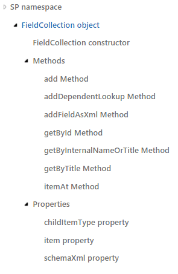
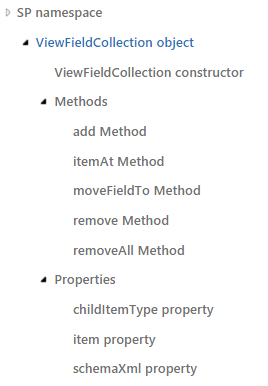

Introduction
There are scenarios where we need to show and compare Internal and Static field names of a SharePoint list.
For instance, if we want to do CAML query over some custom fields, but we don’t remember exactly the Internal Name of the field, we can use this code directly copied and pasted in the browser console to get all the names.
JavaScript Object Model reference
Using JSOM or JavaScript Object Model, It is important the difference between get all fields directly from a list and get all view fields from a view.
get_fields()returnsSP.FieldCollectionobject – contains all SP.Field object properties > https://msdn.microsoft.com/en-us/library/office/jj246815.aspxget_viewFields()returnsSP.ViewFieldCollectionobject — only field names (Internal Names), but not a SP.Field object > https://msdn.microsoft.com/en-us/library/office/jj244841.aspx
A little more information about the Object Model:
SP.FieldCollection object: https://msdn.microsoft.com/en-us/library/office/jj246909.aspx
Represents a collection of SP.Field objects.

SP.ViewFieldCollection Object: https://msdn.microsoft.com/EN-US/library/office/jj244841.aspx

Code
This is the code to get all the field information: